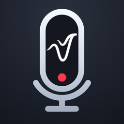

VoxCodexEffective 11 September 2026
VoxCodex is a vocal recorder. Your recordings, songs and settings stay on your iPhone. We do not collect them, we cannot access them, and we have no analytics or advertising in the app.
VoxCodex needs the microphone to record your voice — that is the purpose of the app. Audio is written directly to your device's storage inside your song files. It is never uploaded anywhere by VoxCodex. The only way a recording leaves your phone is when you choose to share or export it yourself.
The timing calibration plays a short click and listens for it with the microphone to measure your device's audio delay. That measurement is a number stored on your phone; no audio from calibration is kept.
Nothing that identifies you. VoxCodex has no accounts, no sign-in, no email capture, no analytics SDK, no crash reporter and no advertising.
Purchases. If you buy VoxCodex Pro, the purchase is processed by Apple through the App Store. To validate receipts and restore purchases across your devices, the app uses RevenueCat, a subscription-management service. RevenueCat receives an anonymous, randomly generated app-user ID and your App Store receipt data (product, purchase date, renewal status). This is not linked to your name, Apple ID or email, and it is not used for tracking or advertising. RevenueCat's own policy is at revenuecat.com/privacy.
We do not sell, rent or share personal data. Apple and RevenueCat process purchase information as described above and only for that purpose.
Songs are stored as .vcsong packages inside the app's own storage on your iPhone and are included in your iCloud or computer backup of the device. Deleting the app deletes its songs.
VoxCodex is rated 4+ and does not knowingly collect any data from anyone, of any age.
If this policy changes, the new version will be posted at this address with a new effective date.
Questions about privacy: nuvesnd@gmail.com.